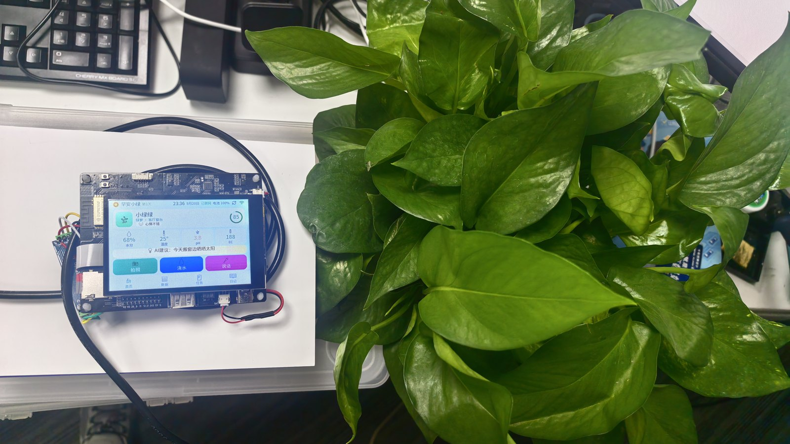
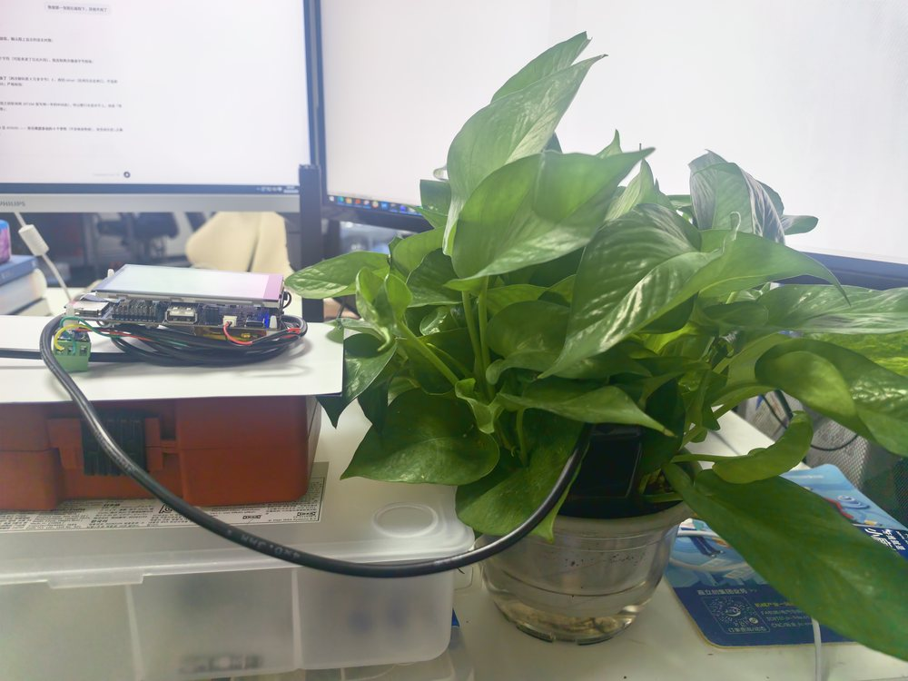
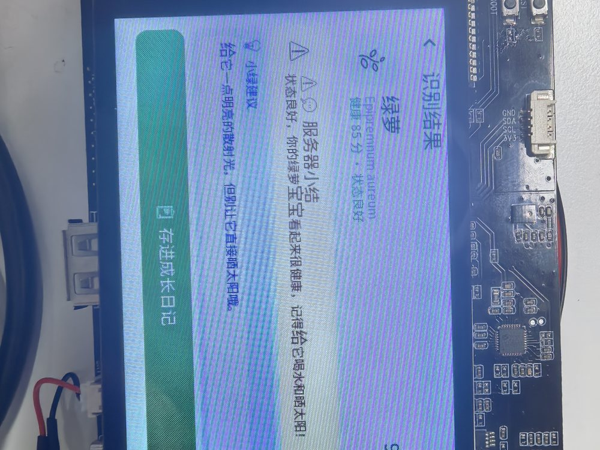
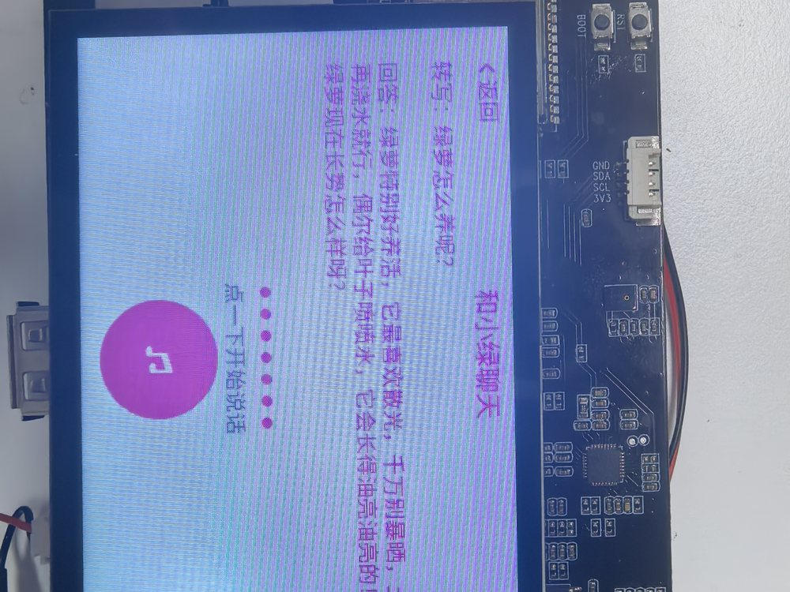
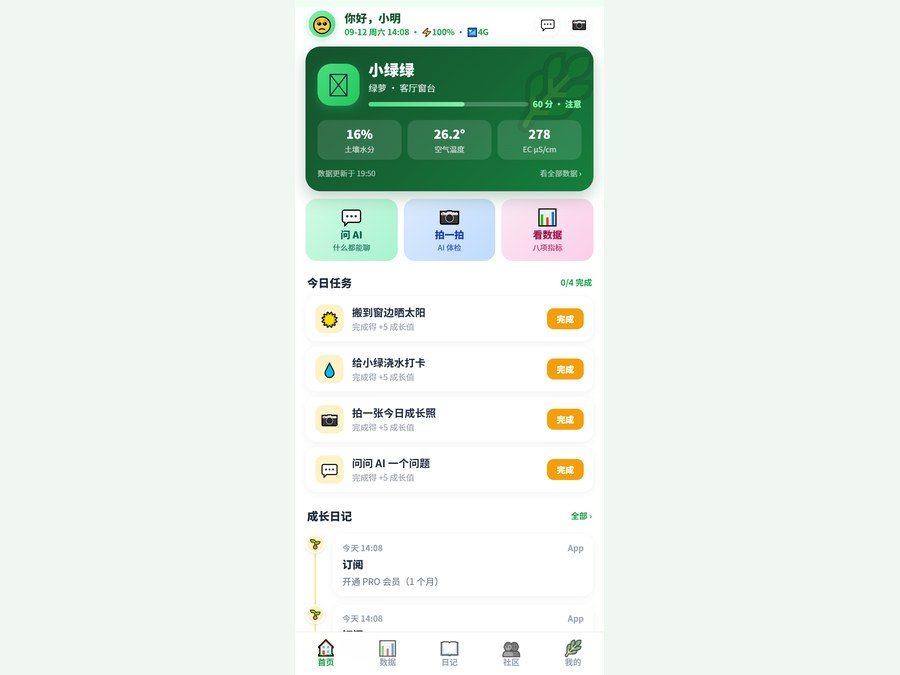
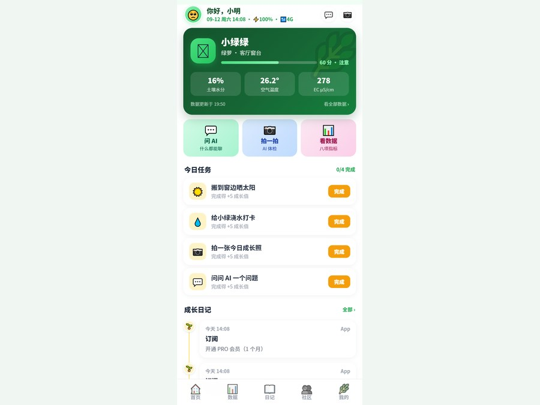

八项土壤数据
水分、温度、EC、pH、盐分、N、P、K 实时采集，状态变化在设备端和 App 同步呈现。

产品能力
硬件、手机端、云平台协同工作，让养植从“凭经验”变成可持续追踪的 AI 服务。
水分、温度、EC、pH、盐分、N、P、K 实时采集，状态变化在设备端和 App 同步呈现。
对准植物拍一张，自动识别品种并分析叶片与长势，给出结构化健康建议。
点一下就能和小绿对话，养护问题即时响应，不需要在手机里层层查找。
诊断结果自动转成养护任务；植物出现严重问题时，可通过一键理赔流程提交证据。
演示视频
产品现场
左右滑动查看实拍和界面。





意见反馈
欢迎告诉我们您最关注的功能、使用场景或合作方式。信息仅用于后续联系和产品改进。